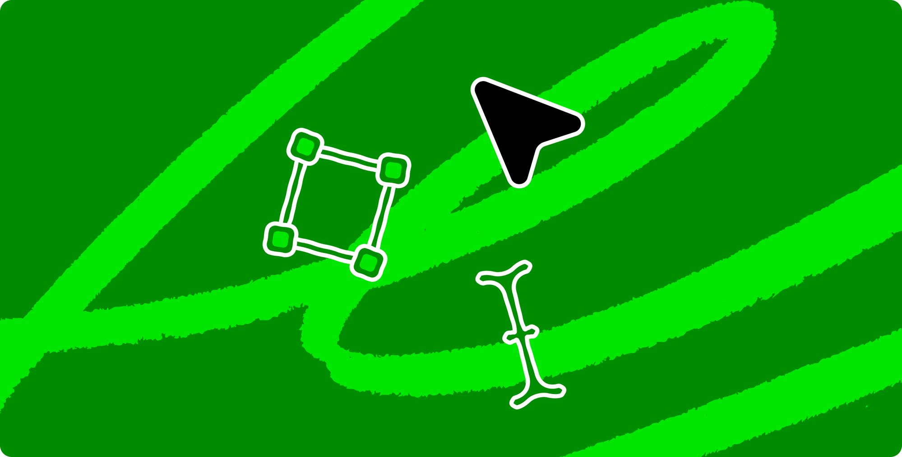
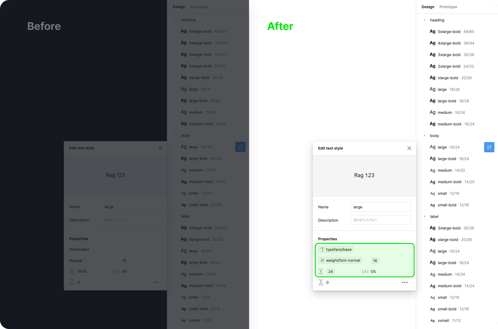
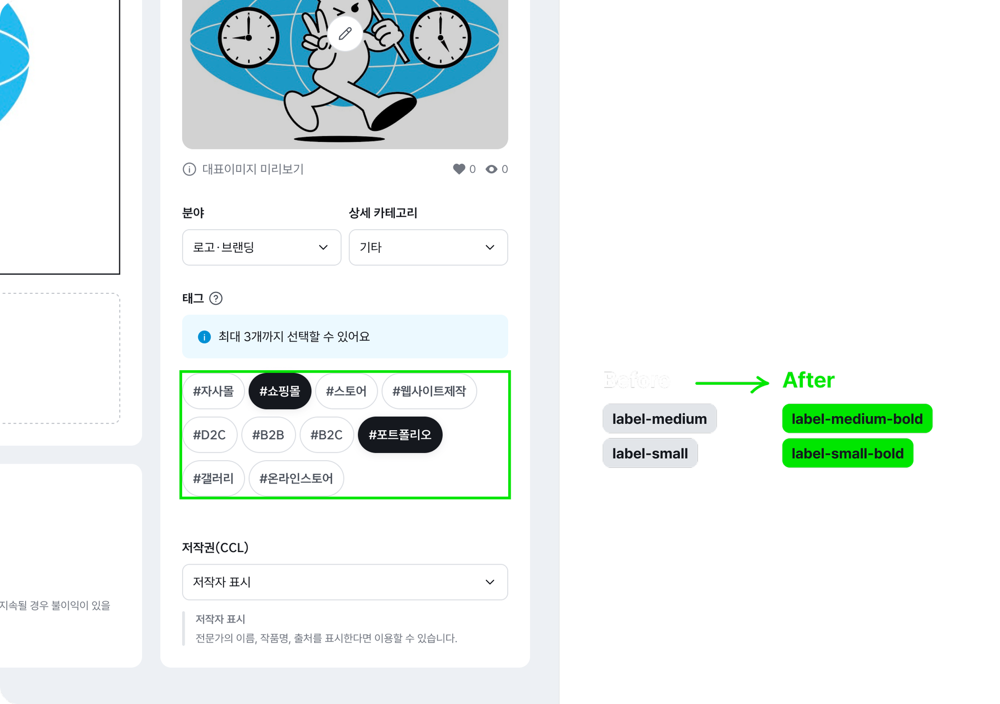
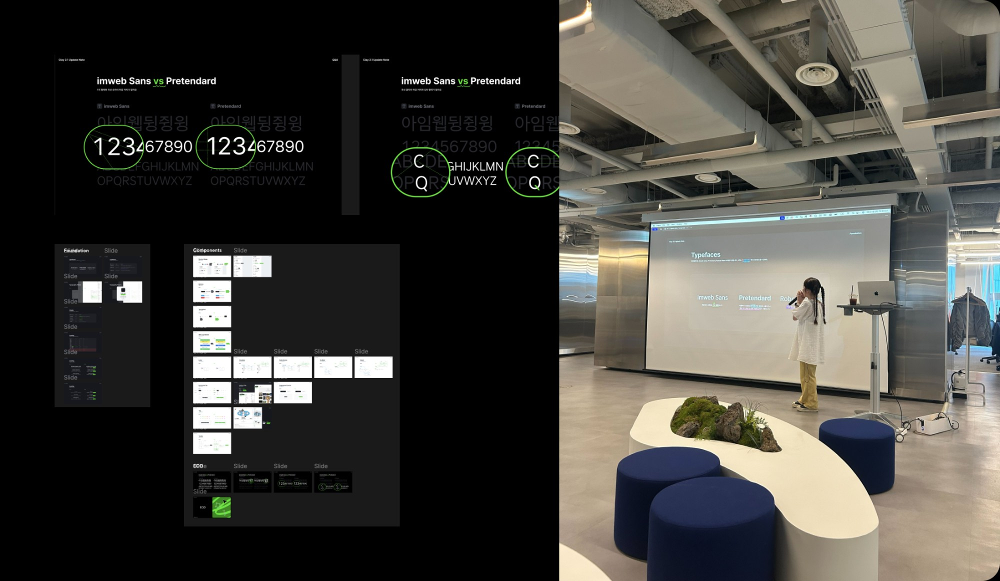

Overview 개요
imweb Sans 전용 서체를 Clay의 기본 서체로 정의하면서 브랜드 아이덴티티를 강화하고, 디지털 제품과 마케팅 콘텐츠 전반에 브랜드의 시각적 일관성을 제공합니다.
전용 서체 imweb Sans는 본문 전용으로 개발된 서체로, 타이틀이나 헤드라인은 기존 Pretendard 서체를 유지함으로써 시각적 차별화를 두었습니다.
Collaborators 협업
Front-end engineer(2)
Goals 목표
Design Process 디자인 프로세스
Testing and iteration
기존 타이포그래피
스타일 분석
목표 설정
Step 2스타일 정의 및
토큰 업데이트
컴포넌트 적용
Step 4배포 및 적용
Step 5Research and
Define Typeface 연구 및 서체 정의
Pretendard 서체로만 사용 중인 기존 타이포그래피 스타일에서 imweb Sans 적용 범위를 검토했습니다. 목적과 위계에 따라 서체의 역할을 정의하고, 시각적 계층 구조를 명확히 합니다.

Define Text style
properties tokens 텍스트 스타일 토큰 정의
최근 업데이트 된 Figma 기능으로 텍스트 스타일 안에서 속성별 토큰을 설정할 수 있게 되었습니다. Clay에서도 이 부분을 적용시켰고 일관된 언어로 개발과 디자인의 명확한 커뮤니케이션을 도와 작업 효율을 높였습니다.

Testing
and Iteration 테스트
각 스타일의 서체 크기(Size), 굵기(Weight), 행간(Leading) 등 세부 설정을 조정하고 주요 인터페이스에서 시각적 테스트 진행했습니다.

Workshops and
Training Sessions 업데이트 세션
새로운 서체 스타일 적용 방법에 대한 워크숍 및 교육 세션을 진행했습니다. 서체 사용 가이드라인과 기존 컴포넌트에서 달라진 점을 안내하고 관련 리소스 제공 했습니다.

Results and
Achievements 결과 및 성과
브랜드 전용 서체가 디자인 시스템에 통합되면서 imweb의 모든 제품에서 일관된 타이포그래피 스타일을 유지할 수 있게 되었습니다. 본문용, 제목용 서체를 용도에 맞게 구분해 최적의 타이포그래피를 제공함으로써 시각적 완성도를 높였습니다.
React 기반의 디자인 시스템이었던 Clay는 이번 배포를 통해 다양한 환경에서도 토큰을 활용할 수 있게 되었습니다. 따라서 메이커들의 협업이 원활해지고, 작업 효율성이 크게 높아졌습니다.